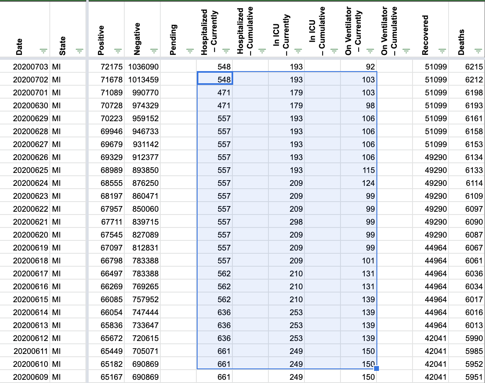
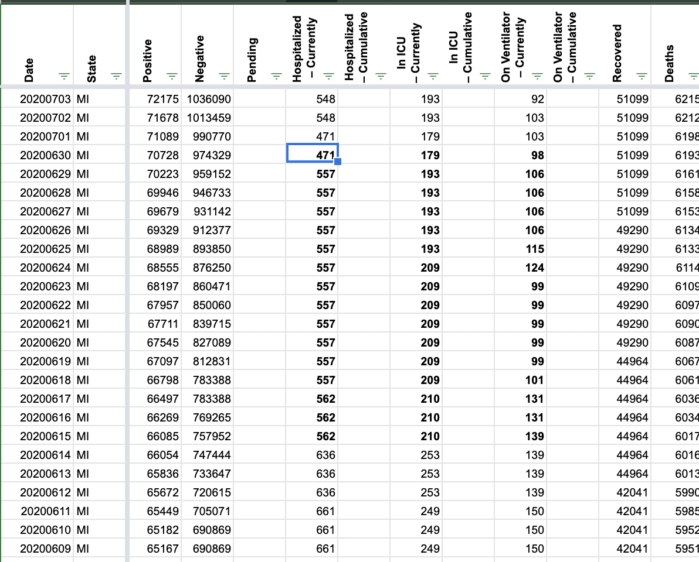
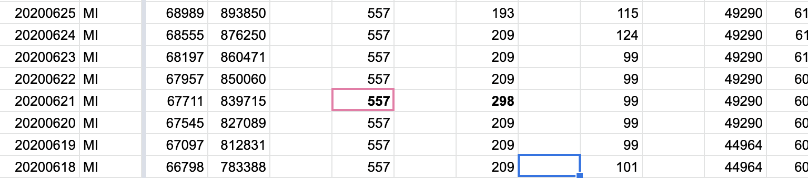
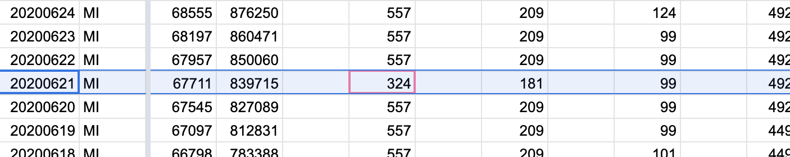

[MI] Hosp and ICU discrepancy on 6/21
Hosp and ICU are typically sourced from the patient census table, but it appears as though these values were sourced from elsewhere on 6/21, interrupting the time-series.
Comments
brianskli commented on July 17, 2020 at 8:33 pm
A second look was taken at 6/15-/30. Fixed using screenshots of the patient census table. Other issues found: Inaccurate vents on 6/21 (298 -> 209) Before:  After: 
Upon reviewing screenshots, numbers from the patient census were used: https://covid-tracking-project-data.s3.us-east-1.amazonaws.com/state_screenshots/MI/MI-secondary-20200621-183853.png After:  Before: 